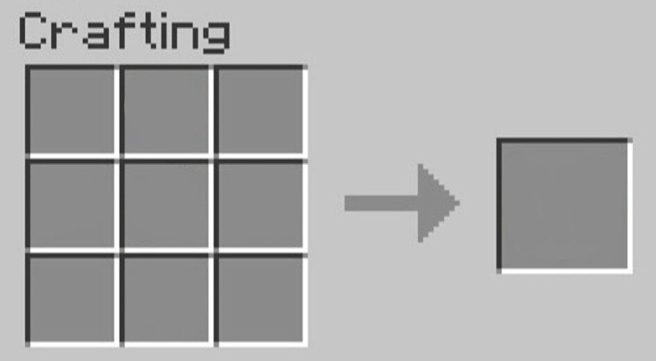

Крафт (крафтинг, от англ. crafting) — это способ получения большей части существующих в Minecraft блоков и предметов. Крафт был добавлен в версии Indev.
Для того, чтобы скрафтить что-либо, игроку нужно определённым образом разместить в сетке крафта необходимые ресурсы.
В инвентаре игрок может воспользоваться сеткой крафта 2х2. Для работы с сеткой 3х3 нужно создать и установить верстак.
Правила крафта:
1.Для крафта нужно иметь определённые ингредиенты.
2.Доски, каменный кирпич, песчаник и шерсть могут быть любого вида. Однако покрасить можно только белую шерсть.
3.Ингредиенты должны быть расположены определённым образом друг относительно друга, за некоторыми исключениями. Если порядок в данном рецепте не важен, им можно воспользоваться и в инвентаре, если, конечно, все необходимые ингредиенты помещаются в сетку 2х2. Пример таких рецептов: красители, цветная шерсть, тушёные грибы, приготовленный паучий глаз, огненный шар.
4.Расположение ингредиентов в сетке крафта не имеет значения. Например, факел можно скрафтить, поместив уголь над палкой в любом из 2 вариантов в сетке 2х2 или любом из 6 — для 3х3.
5.За каждый крафт (за каждый щелчок по иконке результата) будет использован только один ингредиент из каждой ячейки. Если при этом зажать ⇧ Shift, будет сделано максимально возможное количество предметов.
6.Если рецепт несимметричен относительно вертикальной оси, его можно сделать любым образом. Например, рецепт мотыги можно получить из рецепта лопаты добавлением материала как слева, так и справа. Рецепты, обладающие этим свойством: топор, мотыга, огниво, ножницы, ступени, удочка и лук.
